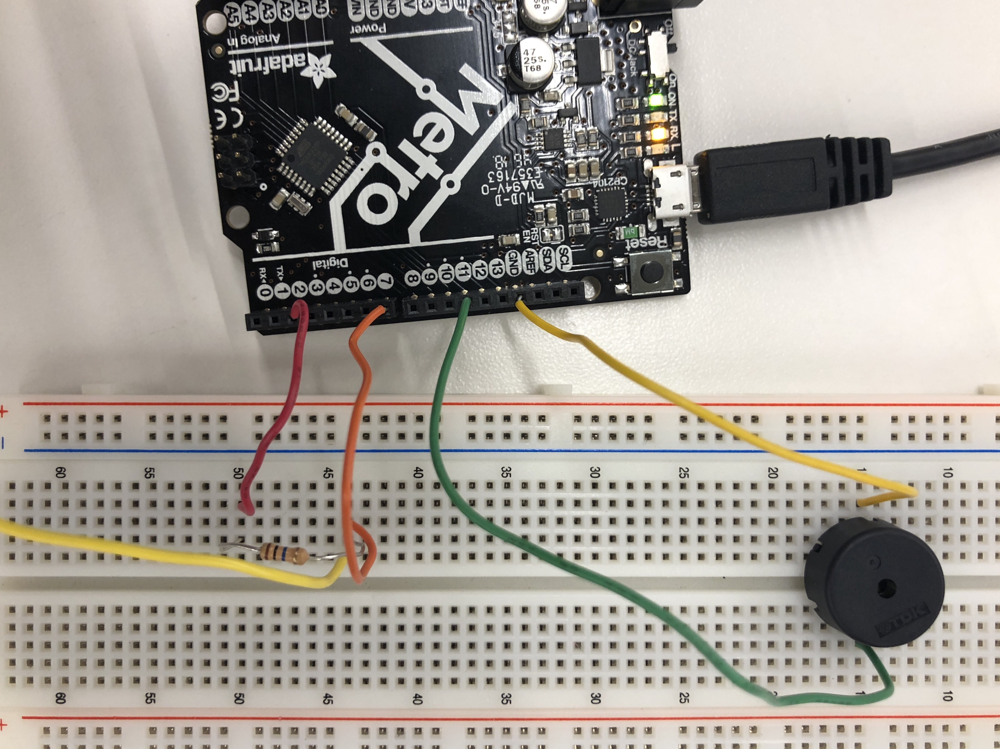
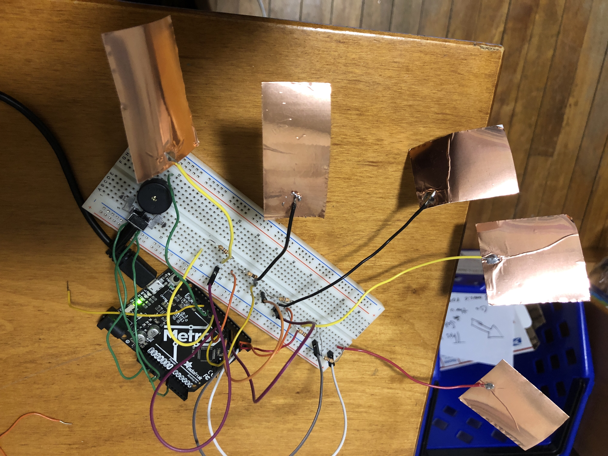
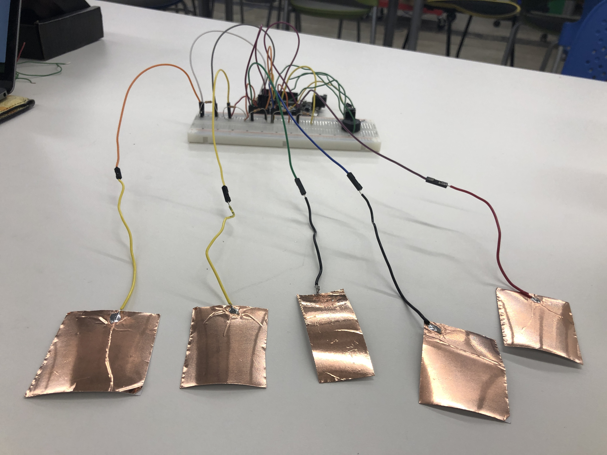
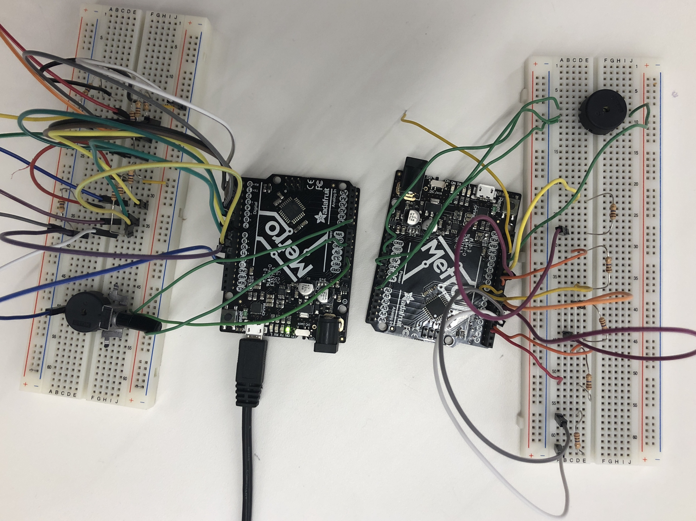
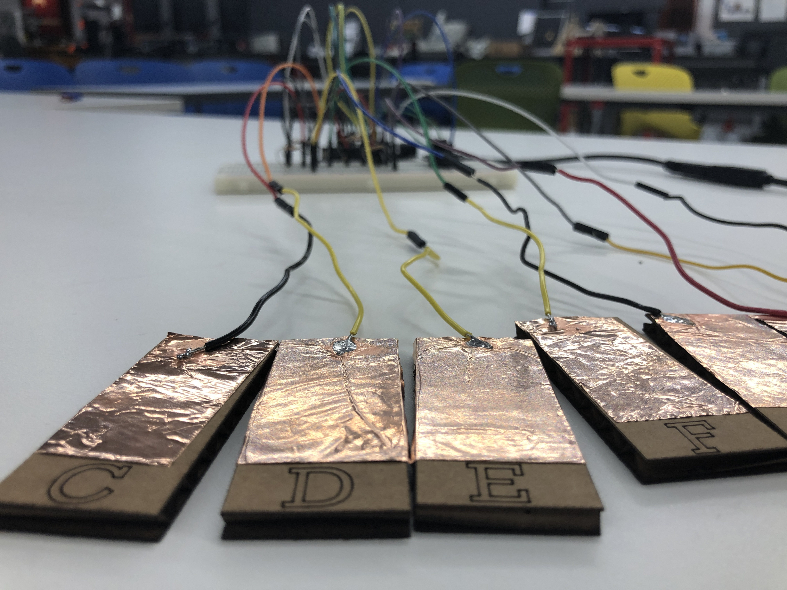
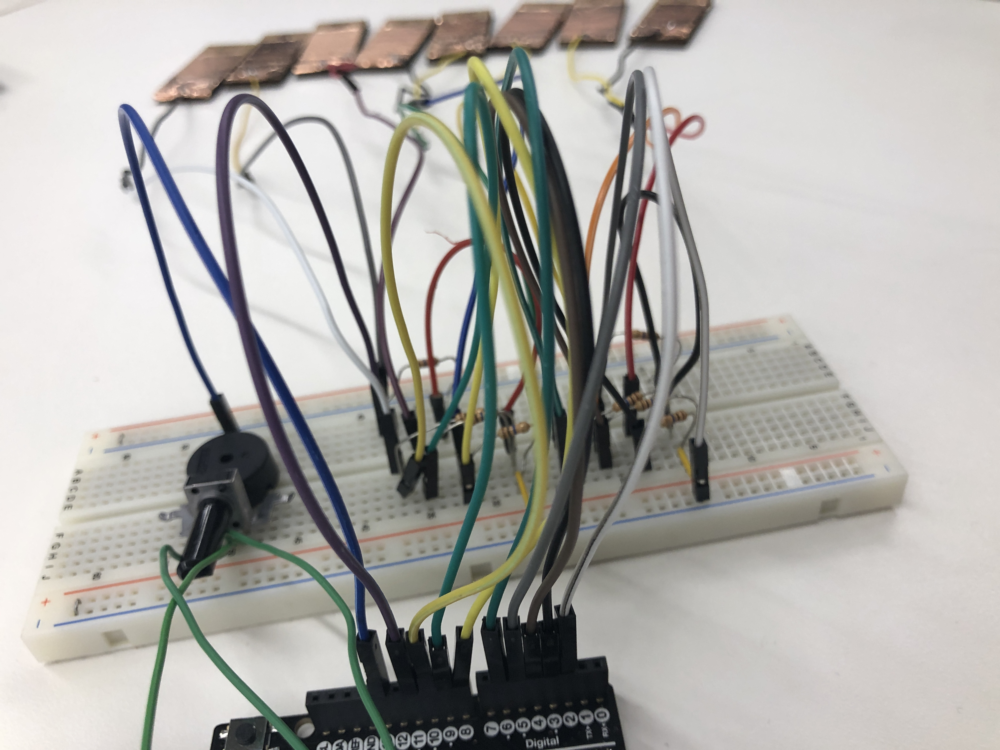
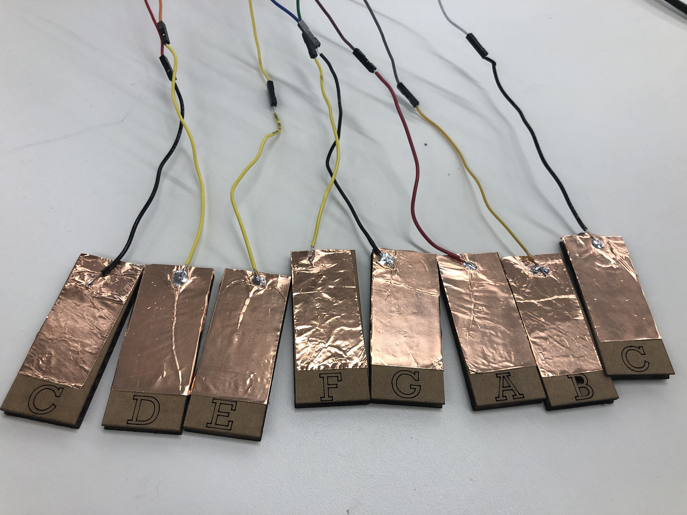

This week's project centered around understanding the function and design of input sensors, with a special focus on capacitive (a word that I endlessly struggle to spell) sensing. While we were shown a variety of sensors in class that measured tilt, angle, volume, and force, I thought that I might make my sensor have a fun musical output as well as measuring input (perhaps straying off the beaten path slightly). I decided that a pseudo-MIDI keyboard would be the ideal project to explore making my own capacitive sensors (the keys), while applying another sensor (a potentiometer) to change volume of the output.
To begin, I wanted to test the waters and see if I could send create a capacitive sensor, using the touch of my finger as 'ground' (as we explored in class) and assigned a tone, measured in frequency in hertz, to the pin that had the conductor attached to it. This resulted in a pitch (in this case, a C3) played when I touched the capacitor. I used a Piezo buzzer (which plays sound and has the ability to modulate tone) to project the pitch. This rudimentary example is visible in the video and image at the right.
With this proof of concept in hand, I moved onto adding more keys to the mix, assigning different pins different frequencies that would eventually correspond to a C-Major scale. I used a nifty helper file called pitches.h, which listed the frequency of each note on a piano and assigned them comprehensible variable names. 
My next bottleneck was the layout of my board; I realized that, by assigning each capacitor a unique digital input and output pin, I had maxed out the number of digital pins available to me with only 5 notes, which does not a full C-major chord make! So, I needed to rethink and streamline my design. Fortunately, harnessing the conductive powers of the breadboard, I was able to assign every piece of copper tape a unique output pin but a common input pin (Pin 2). This allowed for my design to accomodate all eight notes I was hoping it would (in an ideal world, I'd have accidentals, meaning 13 notes total), but I would likely need a multiplexer to achieve that. However, this ended up working just fine! 
After rearranging the breadboard, I added a potentiometer to change the volume when turned. I used the below code to achieve this, where potPin corresponds to the potentiometer and piezoPin corresponds to the Piezo buzzer.
// defining potentiometer output
int val = analogRead(potPin);
float voltage = val * (5.0/1023.0);
Serial.print(val);
analogWrite(piezoPin, voltage);
delay(1);
After tacking this on, I calibrated the potentiometer by measuring the angle of the turn with protractor and recording the read of the voltage output. My calibration curve is at the left. With this sensor in place to modify volume and the individual copper tape sheets wired to the board, I decided to make some aesthetic improvements to my design. Firstly, I laser cut keys and labeled them with their corresponding notes to facilitate play and then adhered the copper tape to them. I had quite a lot of fun learning to play short songs on it!
  